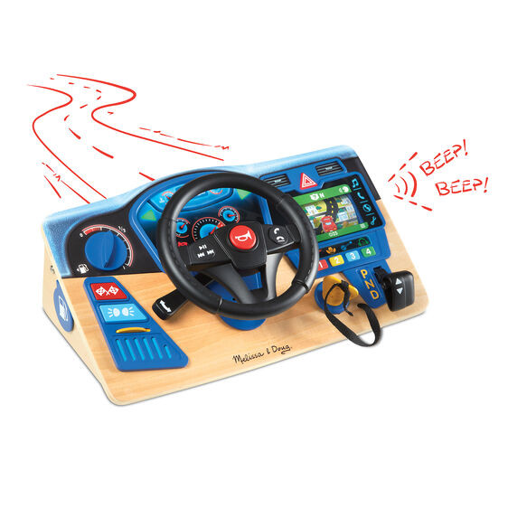
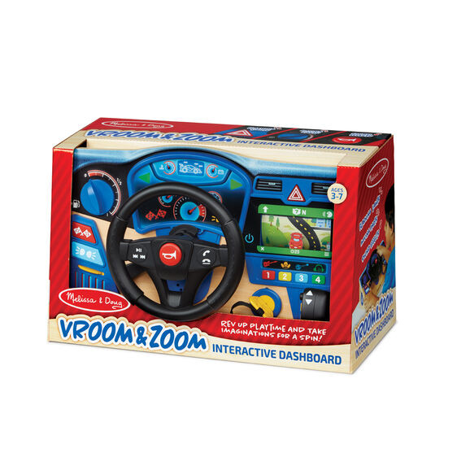
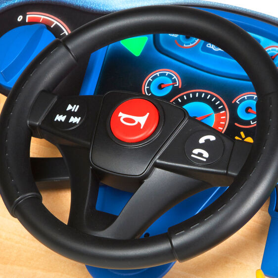
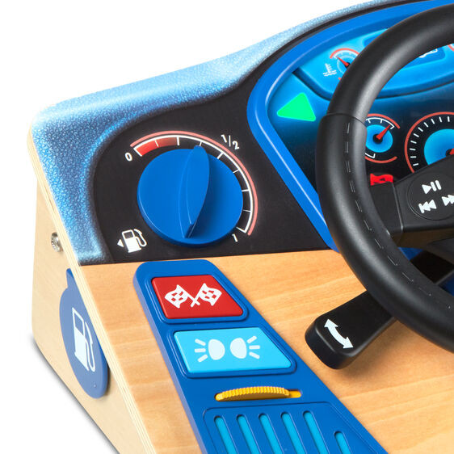
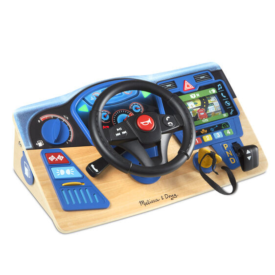

Vroom and Zoom Interactive Dashboard
Vehicles
R1 350Realistic play steering wheel mounted on a sturdy wooden dashboard with lights, sound effects, and moving parts, including a scrolling GPS Includes key start, gear shift, radio with 4 stations, horn, adjustable heat and A/C vents, signal, hazard, and headlight indicators, sport mode button, gas tank countdown timer, gas cap Turn the wheel to keep car on the GPS road; GPS automatically shuts off after 5 minutes Makes a great gift for preschoolers to school-aged kids, ages 3 to 7, for hands-on, screen-free play 14
Enquire about this product



Vroom and Zoom Interactive Dashboard at Kids Corner KZN
Vroom and Zoom Interactive Dashboard is part of our Vehicles collection. Kids Corner KZN stocks toys for learning, pretend play, creative play, gifting and everyday childhood discovery in South Africa.
Browse more Vehicles toys